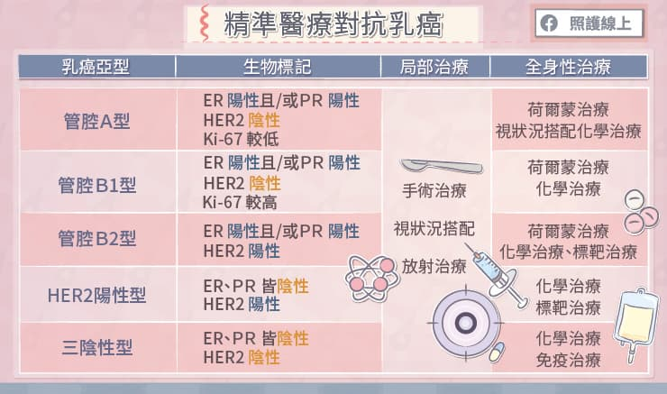
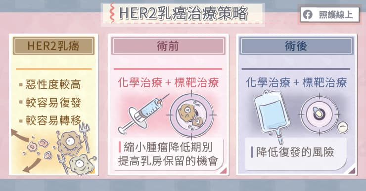

提到癌症的時候，大家經常會以「癌症第幾期」來思考嚴重程度，但是隨著醫學進步，我們對於癌症特性已有更新的認識。
澄清醫院乳房醫學中心葉大成醫療長指出，根據現在較新的觀念，我們不該把「乳癌」一概而論，需要進一步深入到分子醫學的層級，找出讓乳癌快速生長的關鍵，再依據癌細胞不同的受體、特性，做出適當的分類。
精準治療，對抗乳癌
乳癌患者接受切片檢查後，醫師可從病理報告中了解患者乳癌細胞的重要特性，包括雌激素受體（ER）、黃體激素受體（PR）、第二型人類表皮生長因子受體（HER2）、癌症生長指數（Ki-67）等，並根據這些特性來區分乳癌的亞型。不同乳癌亞型的惡性度不同，治療策略也不同。乳癌亞型包括：
● 管狀A型：荷爾蒙受體ER、PR呈現陽性，Ki-67較低，HER2陰性的乳癌。這群患者的人數約占了所有乳癌患者的一半，預後較好，對荷爾蒙治療有良好反應，可視狀況搭配化學治療。
● 管狀B1型：荷爾蒙受體ER、PR呈現陽性，Ki-67較高，HER2陰性的乳癌。建議使用荷爾蒙治療與化學治療。
● 管狀B2型：荷爾蒙受體ER、PR呈現陽性，HER2陽性的乳癌。建議使用荷爾蒙治療、標靶治療、化學治療。
● HER2陽性型：荷爾蒙受體ER、PR呈現陰性，HER2陽性的乳癌。HER2是第二型人類上皮成長因子受體的簡寫，有這個蛋白質受體的話，代表乳癌細胞會快速分裂、增加轉移的機會。荷爾蒙治療對此型乳癌無效，需要使用化學治療與標靶治療來提高患者存活率。
● 三陰性型：代表患者的荷爾蒙受體ER、PR和HER2均為陰性，因此患者無法接受荷爾蒙治療或標靶治療，需要用化學治療抑制癌細胞，屬於惡性度較高的乳癌。

精準治療，對抗乳癌
「現在我們比較常講乳癌有五個亞型，不要再把乳癌一概而論。隨著癌症基因逐漸被發現，未來說不定有十幾類乳癌呢！」葉大成醫師強調：「精準醫療是現代癌症治療的概念，會藉由基因序來發展藥物。」
面對HER2陽性乳癌，術前標靶輔助療法可提升預後
根據統計，約有15%-20%左右的乳癌患者屬於「HER2陽性」。HER2陽性屬於惡性度較高的一種乳癌，因為當HER2基因過度表現，癌細胞不僅分裂能力強，對部份治療藥物也較容易有抗藥性，使得病患即使完成手術治療，仍有較高的機會復發或轉移，存活期較短。
在過去的觀念裡，在發現乳癌時就想盡快把腫瘤切除，即使是HER2陽性的乳癌，也是先手術切除腫瘤，再進行術後輔助治療。
「外科手術是把肉眼可見的腫瘤拿掉，而肉眼看不見的癌細胞，就要靠化學治療、標靶治療，」葉大成醫師解釋：「現在的研究報告顯示，於手術前做藥物輔助治療，比起手術後做藥物治療會讓患者有更好的存活率。」
因此針對HER2陽性乳癌，新的治療指引建議可以改變治療順序，不一定要急著開刀，可考慮先給予單標靶或雙標靶藥物搭配化療，將腫瘤縮小，即所謂「術前標靶輔助療法」。如此一來，可以先降低腫瘤期別，再進行手術，能夠提高保留乳房的機會，術後再接續單標靶或雙標靶藥物打滿18個療程，或改變標靶藥物，可顯著降低復發風險。

HER2乳癌治療策略為什麼術前標靶治療會有好處呢？
「術前使用標靶輔助療法有兩大優點，第一可以把腫瘤縮小，第二就是能幫患者篩選最合適的治療藥物。」葉大成醫師說。
在手術前接受標靶治療，腫瘤很可能因此縮小，於是原本需要乳房全切除手術的患者，有較高的機會保留乳房，也有機會免除淋巴結清除術，減少術後併發症，包括肩關節僵硬疼痛、上肢淋巴水腫與手臂活動不適等。
第二就是能為患者篩選最合適的治療藥物。使用標靶藥物搭配化療進行術前輔助療法，大約三至四個月後即可看出成效，如果有效，腫瘤會縮小，甚至消失，可幫助醫師了解哪一類的藥物適合患者，做為往後治療的依據。
「假使發現做完六次標靶治療後，腫瘤大小沒什麼變動，成效並不盡理想，代表藥物無法完全消滅癌細胞，就要考慮更換藥物，選擇其他種類的標靶藥物進行後續治療。」葉大成醫師建議。
由於尚未切除腫瘤，可以明確觀察到腫瘤對藥物的反應，臨床醫師更容易掌握病患的治療成效，有助減少復發、轉移的風險，提高乳癌患者的存活率。
根據國外大型臨床試驗結果顯示，雙標靶搭配化療用於乳癌術前及術後輔助療法，完成18個療程，有效降低早期乳癌發生淋巴結轉移之高風險病患28％的復發風險，且有超過六成的患者在術前可達到腫瘤消失不見的程度。
若高風險之早期乳癌患者接受術前雙標靶治療及手術後，若仍有癌細胞殘留，可使用新一代抗體藥物複合體，持續治療14個療程，可降低50%復發風險。
乳癌醫療團隊全方位照護 透過LINE@與病患及時緊密互聯
被診斷出乳癌時，患者通常是心煩意亂，面對龐雜的治療資訊更是感到茫然、不知所措。
資深個管師謝惠珍主任說，為了解決這些問題，台中地區的茱麗葉乳癌照護醫療團隊配置了多位「個管師」，當患者用藥遇到疑問，或對治療方式尚不清楚時，都能在第一時間用Line@多媒體系統聯絡個管師，知道下一步該怎麼辦。
「病人實際接受到的醫療訊息，往往會有落差，有時候你給他10分，他可能僅吸收到2分，所以為了避免患者、家屬誤解或認知不清，我們後續都會提供完善的衛教諮詢，讓病人可以再一次的確認學習。」談到乳癌醫療團隊時，謝惠珍主任說：「醫師可以提供精準醫療服務，而個管師還會提供與乳癌相關的各種諮詢，目前中港澄清醫院、惠中林新醫院、大里仁愛醫院等都是我們的服務據點。」
如此一來，患者在醫院可以了解專業醫療的部分，透過醫病共享決策了解、參與自己的治療計畫；還可以參加病友活動，針對一些與生活息息相關的問題做討論，了解平常可以吃什麼，有沒有哪些保健食品不該吃，有疑慮時還能與個管師窗口及時溝通，必要時由個管師引薦回門診，讓各種治療與資源都能發揮最大的效益！
文章來源： https://reurl.cc/NXGr0x
圖片來源： https://reurl.cc/NXGr0x